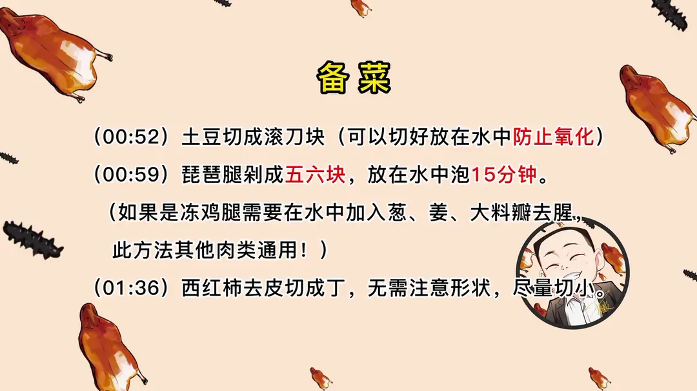
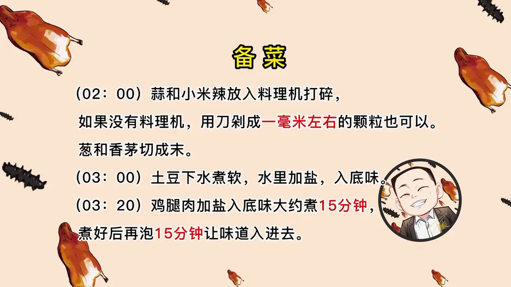
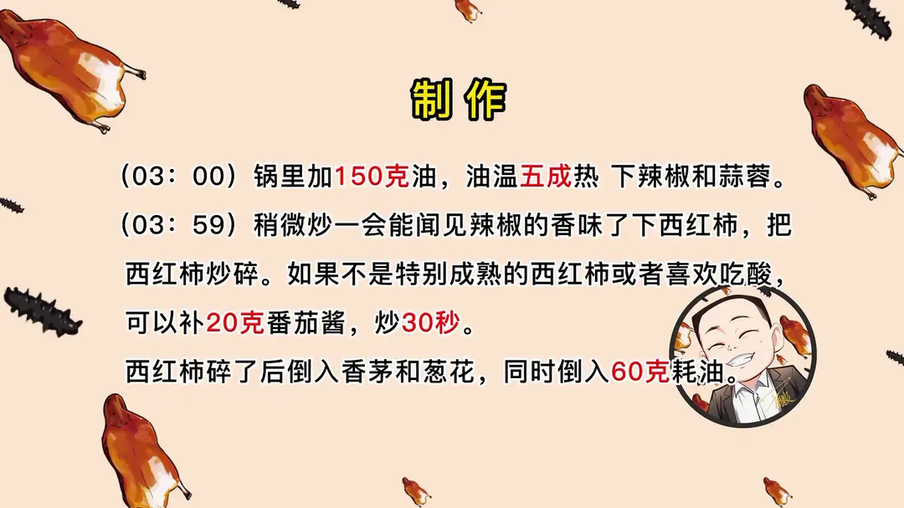
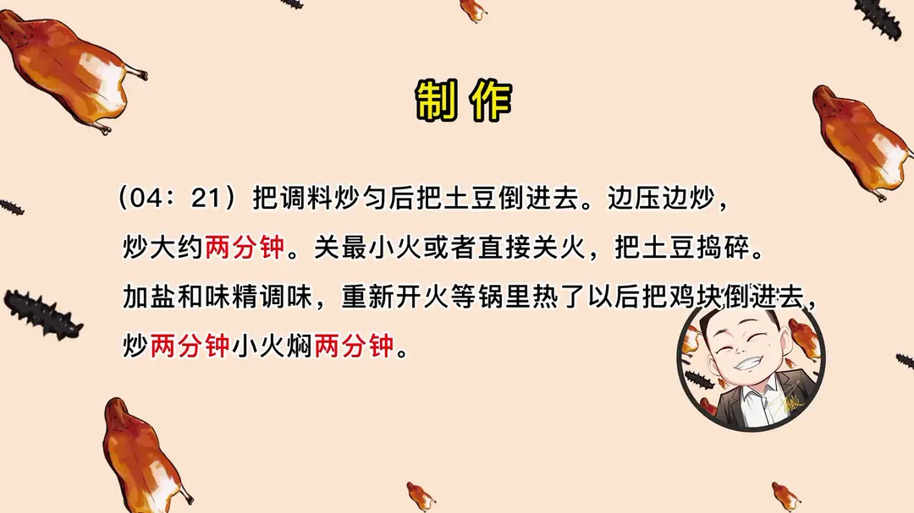

油焖鸡
隋卞一做。鸡腿 200g 配土豆 600g，小米辣与蒜打成蓉炒香，土豆煮软捣碎裹住鸡块，小火焖透。
原视频：https://www.bilibili.com/video/BV1ev4y1z7ra
食材
鸡腿、土豆、西红柿 等 12 样
| 类别 | 用料 | 用量 |
|---|---|---|
| 主料 | 鸡腿 | 200g（两个） |
| 主料 | 土豆 | 600g（两个） |
| 主料 | 西红柿 | 120g（半个） |
| 配料 | 蒜 | 90g |
| 配料 | 小米辣 | 40g（微辣）/ 60g（中辣）/ 80g（特辣） |
| 配料 | 葱 | 10g |
| 配料 | 姜 | 10g |
| 配料 | 香茅 | 5g |
| 调味 | 盐 | 5g |
| 调味 | 味精 | 2g |
| 调味 | 蚝油 | 60g |
| 调味 | 番茄酱 | 20g（非必须） |
步骤
- 切配：土豆切成滚刀块，可以切好放在水中防止氧化；琵琶腿剁成五六块，放在水中泡 15 分钟；西红柿去皮切成丁，无需注意形状，尽量切小。
- 打酱：蒜和小米辣放入料理机打碎，如果没有料理机，用刀剁成 1 毫米左右的颗粒；葱和香茅切成末。
- 煮土豆：土豆下水煮软，水里加盐入底味。
- 煮鸡腿：鸡腿肉加盐入底味，大约煮 15 分钟，煮好后再泡 15 分钟让味道进去。
- 炒底料：锅里加 150g 油，油温五成热下辣椒和蒜蓉，稍微炒一会能闻见辣椒的香味后下西红柿，把西红柿炒碎；西红柿不是特别熟或者喜欢吃酸，可以补 20g 番茄酱炒 30 秒。
- 下香茅蚝油：西红柿碎后倒入香茅和葱花，同时倒入 60g 蚝油。
- 拌土豆：把调料炒匀后把土豆倒进去，边压边炒大约 2 分钟；关最小火或者直接关火，把土豆捣碎，加盐和味精调味。
- 焖鸡块：重新开火，等锅里热了以后把鸡块倒进去，炒 2 分钟，小火焖 2 分钟。
小贴士
- 用冻鸡腿时，泡水那一步要在水中加入葱、姜、大料瓣去腥，这个方法其他肉类通用。
- 土豆切好后泡在水里防止氧化，煮软后再下锅炒更容易捣碎裹住鸡块。
讲解要点
难度：★★☆☆☆（新手可做，难点是辣椒蒜蓉的火候和土豆捣碎的时机）
为什么这么做
- 土豆和鸡腿分开煮：土豆要煮到一压就烂，鸡腿 15 分钟就够，一起煮必然一个烂一个柴。
- 煮土豆的水里加盐：盐既给土豆进底味，又能减少土豆氧化发黑。
- 鸡腿泡水加葱姜大料：剁开的骨头里有骨血，泡透了才不腥；冻鸡腿解冻的尤其要做这一步，其他肉类去腥也通用。
- 小米辣和蒜要打成蓉、用中火炒：颗粒太粗出不来香味，火太小也不出香；闻到辣椒和蒜的香味再下西红柿，顺序不能乱。
- 西红柿炒碎是用来上色的：买的不够熟就补 20g 番茄酱炒 30 秒，只为颜色，不是为酸味。
- 土豆下锅后关火捣碎：关火后土豆不再收汁，边压边炒把表面淀粉化进汤汁里，这就是成品「黏黏糊糊」、每块鸡肉都裹满的来源。
- 鲜味全靠 60g 蚝油：蚝油是这道菜的主味，量给足才有一锅浓稠的咸鲜底。
容易翻车
- 捣土豆时火没关，水分收干会糊底，也可能把土豆炒成干粒。
- 辣椒蒜蓉火太小，香味出不来，最后整锅只有辣味没有香。
- 土豆切好不泡水，氧化后颜色发暗。
- 焖鸡块的时间别拉长，鸡腿已经煮熟，只是借土豆底味，大火久煮鸡肉会散。
原片尾卡




原片文案
AI 字幕校准稿
最开始探店，是为了上别人家店里去看一看、学一学，回去照着搞一搞，也放到我店里用。这个我感觉可以，看看能不能弄到我店上；这个有点贵吧，看看啥还行吧。探店也挣了一些小钱，给大家装了个厨房——当然「探店」这词儿不能这么用，叫学习。第一次做饭，做你们想了很长很长时间的火烧云同款油焖鸡。
把这个土豆炖得特别特别的烂、黏黏糊糊的，每一块鸡肉外面都裹得满满的，吃着咸香。这个菜感觉挺有意思的。你觉得好吃吗？我觉得还行。回家尝试着给你复刻一下。
来吧，我们先处理一下配料。准备什么、准备多少、怎么做，你们不用记，视频最后会有一个很详细的清单。先把土豆削皮，切成滚刀块，这不麻烦，你就喊你妈。
下一步把这个鸡腿做一下。我们用的是琵琶腿，跟我手掌一样大，大约一个剁成五六块。剁好泡在水里边，因为它会有一些骨血，要把它泡一泡。如果你闻着这个腥味很大，就搁两片葱、家里边买的姜用姜皮就可以，搁点葱姜、搁俩大料瓣。如果你是冻鸡腿解冻的，那更得这么泡，这样泡出来的鸡腿一点腥味都没有。其他的肉类想要去腥，这个办法也可以，万能的。
然后处理西红柿，白十字花刀下锅一煮，把皮撕掉，切成丁儿，尽量切小，形状统不统一无所谓，但一定要尽量小。哎，今天的西红柿一般啊，这得批评小李，一定要买那种熟透了的。切点葱末、香茅末，这个就需要切得稍微细一点了。
接下来是这个菜最关键的一步——剁蒜蓉。有料理机的您用料理机，没有料理机的咱就用手剁。为了让大家看明白，我们今天一半用料理机、一半用刀剁。辣不辣的你看着弄啊。这味儿上头，这个料理机还是非常厉害的，基本上把它打成蓉就行了。没有料理机就拍点大蒜，拍的时候刀往前推，多离远点，一会儿刀飞了。再切点小米辣一起做，大约直径在 1 毫米左右就可以了。
准备开火。起一锅水，里面加上盐，把土豆倒进去，大火烧开，然后小火慢慢地煮，把它煮熟、煮软。搁点盐是为了防止氧化，还能给土豆进点底味。
这锅水再放点盐，把鸡腿搁进去煮，烧开之后转小火煮上 15 分钟左右，然后关火泡上十来分钟，让那味儿往里渗着。
锅里放油，油焖鸡油得多一点。放入辣椒和蒜蓉，这时候一定要中火炒，火太小的话它不容易出香味。只要你鼻子能闻见辣椒和蒜的香味了，就可以放西红柿了。这里边西红柿主要是上色用的，这个买的不熟，所以要补点番茄酱；如果西红柿很红，就不用补。再放香茅、葱花、蚝油——这道菜的鲜味主要就来自于蚝油。
把土豆捞进去，炒的时候要拿铲子把土豆压一压，让它表面的淀粉融化到汁里面去。这个时候把火关了，关到最小，如果不好把控你就全关了，然后拿铲子把它铲碎，或者拿勺子把它压碎，这是油焖鸡好吃的关键。煮得差不多了就开火，然后再炒，最好用不粘锅。咱们把鸡块倒进去扒拉扒拉，加盖焖两分钟，一焖你看边上的油就开始渗出来了，然后搅拌一下就可以了。
碳水与肉的终极套餐，吃辣人士的末日狂欢，火烧云同款油焖鸡，上菜。小李做都做完了，过来尝尝吧，我可是吃过火烧云的。碳水跟肉融合起来真是太好吃，土豆的香气和那个鸡油的味道其实搭配起来特别好吃，我觉得这个就是精华版的大盘鸡。火烧云排队半小时，这里五分钟就学会。